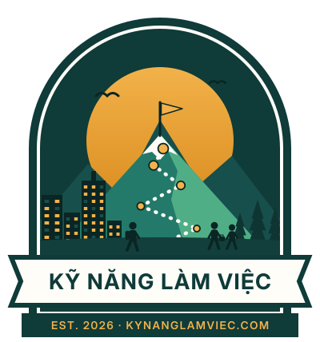

Work skills, learned along your career path
From pupils exploring jobs to managers leading teams. Free, no login needed. Each lesson takes 10–20 minutes, with a workplace scenario and self-check questions.
English edition. Vietnamese is the original language of this site. English pages are adapted with international examples, not translated word for word. More English lessons are being added. All Vietnamese lessons: Bài học.
Where are you on your career path?
Choose the group closest to you. These are suggested paths only: every lesson is open, and you choose your level for each skill.
10 skills, 5 clusters
Each skill has 5 levels: 1. Exploring → 2. Starting → 3. Secure → 4. Proficient → 5. Leading.
III. Self-management
IV. Collaboration and leadership
V. Digital workplace
How to remember what you learn
Every lesson has scenario questions. Trying to recall the answer helps you remember longer than rereading.
After a lesson, review it after 1, 3 and 7 days. The site creates a calendar reminder file for you.
Source: Dunlosky and colleagues (2013), a review of learning techniques, Psychological Science in the Public Interest. Rereading and highlighting are not among the high-utility techniques.
English lessons
- Take instructions and confirm them before you start ✓ Done
- Track the tasks you are given and flag delays early ✓ Done
- Write a work email with one purpose and one clear request ✓ Done
- Write a short progress report in 3 parts ✓ Done
- Describe a problem clearly and bring two options when you ask ✓ Done
- Ask for feedback and turn it into action ✓ Done